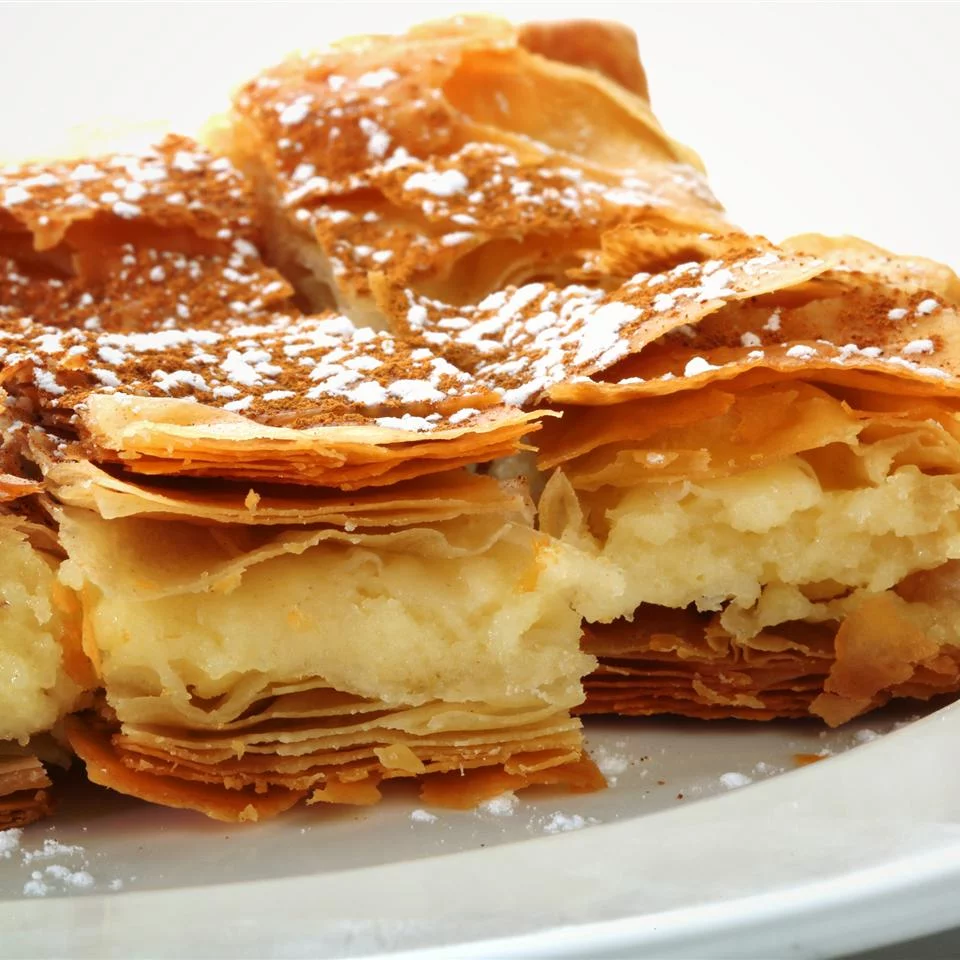

Tiropita

Description
A delicious classical Greek cheese pie!
Kali orexi! (Bon appetit!)
Ingredients
- 6 tablespoons of butter
- 1/2 cup of all-purpose flour
- 2 cups of milk
- 1 teaspoon of salt
- 1 pinch of nutmeg
- 1 pound of feta cheese
- 3 ounces of grated Greek Kefalotiri cheese
- 4 eggs, beaten
- 1/4 cup of chopped fresh parsley
- 3/4 pound of phyllo dought, thawed
- 3/4 cup of melted butter for brushing
Steps
- Melt 6 tablespoons butter in small saucepan over medium-low heat. Whisk in the flour until smooth and cook, stirring constantly, for 2 minutes. Gradually pour in the milk, stirring constantly with a whisk or wooden spoon. Add the salt and nutmeg,
stirring occasionally, until mixture is bubbly and thickened, 5 to 10 minutes.
- Mash the feta cheese with a fork in a bowl and stir in the grated kefalotiri, beaten eggs, and parsley. Pour in the hot white sauce and mix well.
- Preheat oven to 350 degrees F (175 degrees C). Butter a 9x13-inch baking dish.
- Line the buttered baking dish with a sheet of phyllo dough and brush it with melted butter; keep the remaining phyllo sheets covered with plastic wrap while you work. Repeat with half of the phyllo sheets, brushing each sheet with butter, and
letting them come up the sides of the baking dish. Pour in the cheese filling.
- Lay the remaining pastry sheets on top of the filling, brushing each with butter. Brush the top of the last sheet with butter and, with a sharp knife, score the top sheets into strips about 3 inches wide from one end of the baking dish to the
other.
- Bake in the preheated oven until the pastry is golden brown and crisp, about 45 minutes. Let stand for 5 minutes, then cut into squares and serve hot.